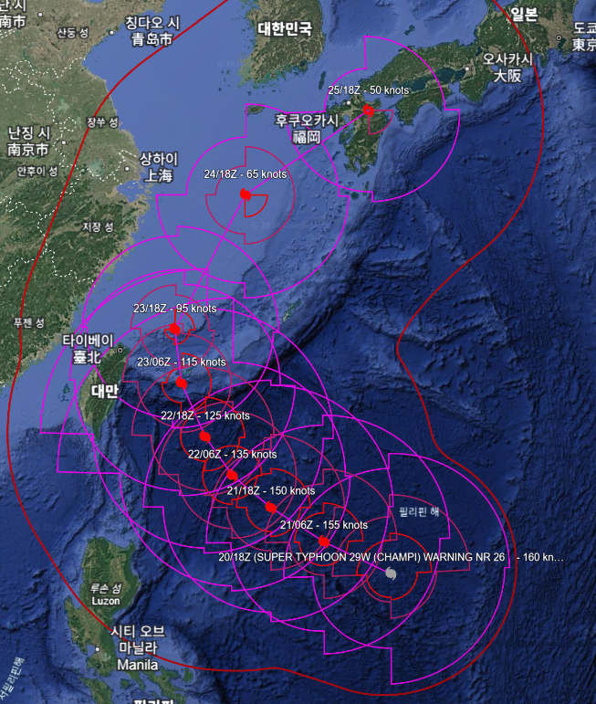
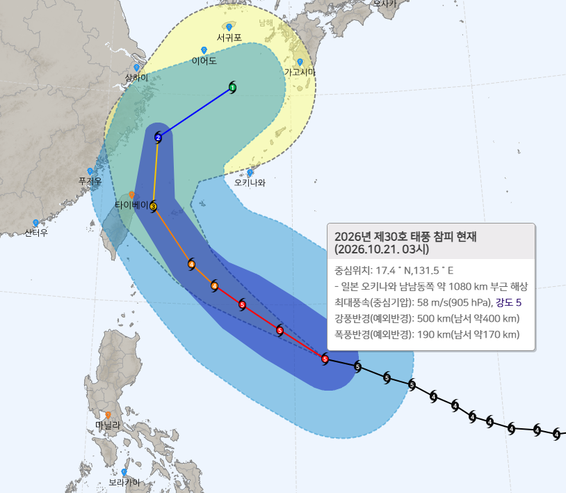
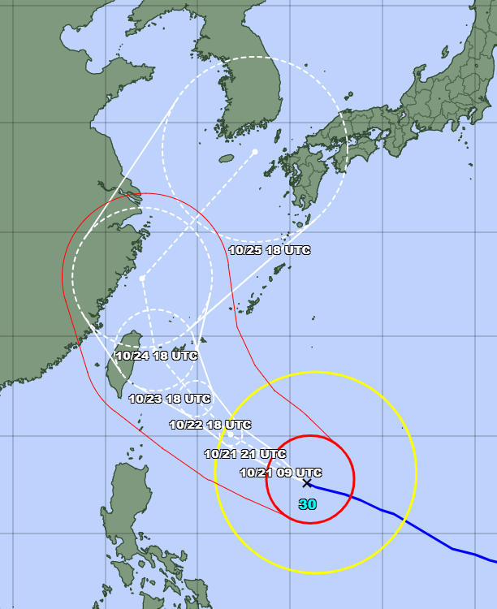
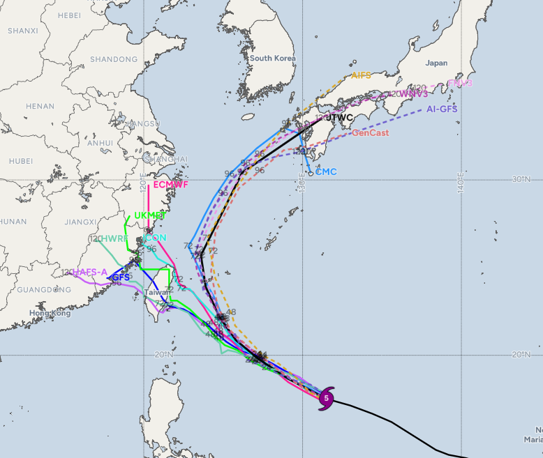
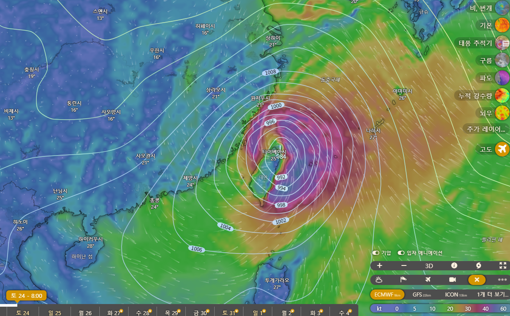
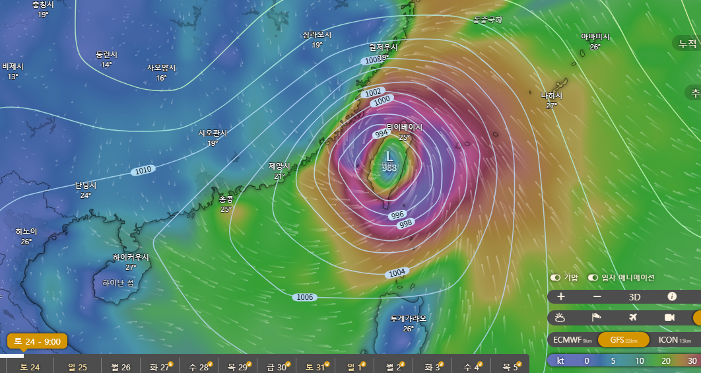
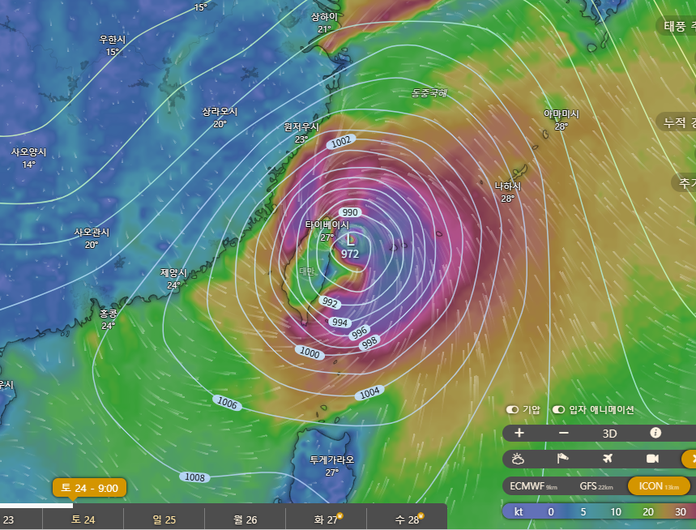
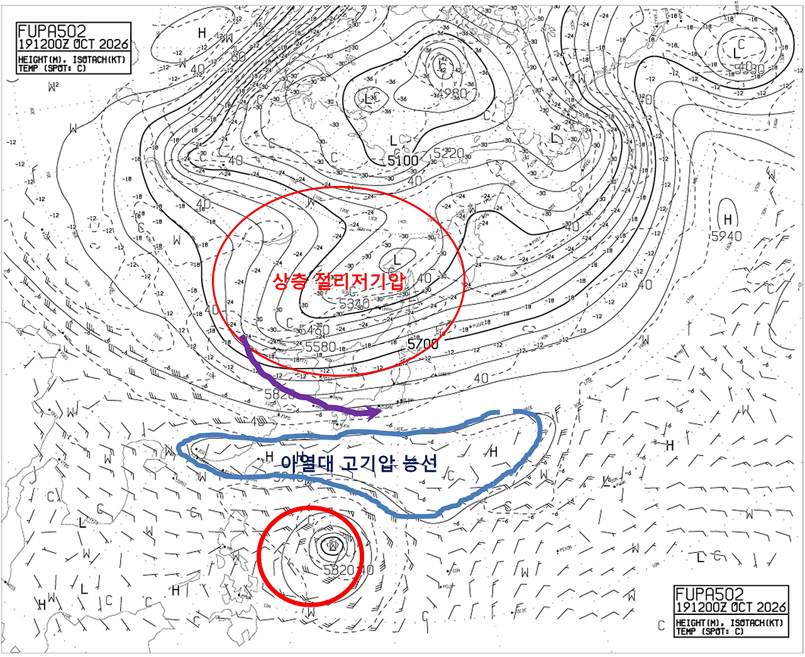

10.21. 03:00 기준 상황
중심기압 895hPa, 1분 평균 최대풍속 160노트(295~300km/h)의 5등급 슈퍼태풍 등급(미국 JTWC해석값 기준)
강풍반경만 450~500km에 이르는 대형 크기이며

미국측 예상경로 - 대만 동쪽 해상에서 턴한 뒤 10월 25일 새벽 무렵 제주 남쪽 해상을 거쳐 10월 25~26일 밤 시간대에 일본 규슈 나가사키~구마모토 인근에 상륙할 것으로 예상

한국 기상청 예상 경로 - 미국보다 태풍의 이동속도를 다소 느리게 보고 있으며, 대만에 조금 더 붙는 경로 예상, 10월 26일 새벽 제주도 남쪽 해상에 위치할 것으로 보고 있으며, 추세상 26일 낮 시간대에 일본 규슈 가고시마 부근 상륙 가능성이 보임

일본 기상청 예상 경로 - 대만 앞바다 거쳤다가 중국 앞바다 경유 후 10월 26일 새벽 통영 남쪽 약 150km 거리 해상까지 북상하는 경로 예상
한미일 120시간 경로 및 직후 추세는 다음과 같음
미국 : 일본행(나가사키-구마모토 인근 상륙)
한국 : 대만 스치고 일본행(사세보-나가사키 인근 상륙 추정)
일본 : 한국 남해상 진출 후 대한해협 혹은 쓰시마해협 방면 이동 추세
현 시점 공식 예보 경로를 보면 태풍과 한국과의 거리는 일본 기상청이 가장 가깝게 보고 있으며, 일본쪽으로 트는 속도는 미국이 가장 빠르고, 꺾는 각도는 한국이 가장 많이 꺾는 모습

모델별로 살펴보면 여전히 인공지능 VS 전통모델의 구도가 나타나고 있음



이런 이유로 윈디 어플 돌리는 사람들은 태풍이 대만에 상륙한다는 결과값이 며칠 째 계속 나오고 있어 공식 예보문과 윈디가 보여주는 결과값에 차이가 점점 크게 나고 있을 듯(ECMWF, GFS, ICON모두 물리기반 전통모델에 해당)

이 이유중 하나가 태풍과 북쪽 절리저기압 사이에 끼어있는 아열대 고기압 능선의 변화 예측인데, 인공지능모델들과 공식 예보기관들의 예보관들은 상층 절리저기압(단파 기압골)이 아열대 고기압 능선에 빈 틈을 만들어내고, 슈퍼태풍 강도까지 발달한 참피가 이 틈을 타고 북상할 것으로 예상하고 있음(앞으로 24~48시간 범위 내에 결정날 상황)
공식예보기관들이 동서 구간 차이는 있지만 어떤 형태로든 대만 동쪽 부근에서 이 기압골에 의한 고기압의 틈새가 생길 것으로 보고 있고, 대체로 3일 뒤 이 능선을 넘어서서 중위도 전향점으로 진입 후 드리프트를 할 것으로 예상하고 있음
다만 인공지능 모델이 아닌 물리기반 전통모델들은 이 아열대 고기압 능선이 완전히 찢어지지 않고 곧바로 세력을 회복할 것으로 예측하고 있는데, 이 경우엔 참피의 이동경로가 여전히 서쪽으로 잡히면서 대만에 상륙하는 경로가 나타나게 될 것으로 보임
이와 관련하여 JTWC의 통보문 내용 중 일부를 그대로 가져오면 다음과 같음
"There is a distinct bifurcation between the physics-based models and the AI-based models: the physics-based models—including GFS, GEFS, ECMWF, and ECENS—show a straight running track that progresses west-northwestward over the next 5 days, with landfalls in Taiwan and China."
(번역기)
"물리 기반 모델과 AI 기반 모델 사이에는 뚜렷한 차이가 존재합니다. GFS, GEFS, ECMWF, ECENS를 포함한 물리 기반 모델들은 향후 5일 동안 태풍이 서북서 방향으로 계속 이동하여 대만과 중국에 상륙할 것으로 예측하고 있습니다. GSM, NAVGEM, 그리고 Google DeepMind, AI GFS, AI ECMWF, AI ECENS, 실험적 모델인 WindBorne을 포함한 AI 기반 모델들은 '참피(Champi)'가 단파 기압골(shortwave trough)에 의해 형성된 약한 구역을 따라 북동쪽, 즉 일본 방향으로 방향을 트는(전향하는) 시나리오를 제시하고 있습니다."
거기다 AI모델들을 비교해보면 이것들 사이에서도 120시간 경로 오차 범위가 945km의 정신나간 간격이 존재하는 등 120시간 경로 오차가 상당히 클 가능성이 높아서 아마 골머리를 앓고 있지 않을까 싶음
어쨌건 일단 공식 예보 경로대로라면 24일부터 제주 남쪽을 시작으로 태풍 전면부에 강수대가 들어서면서 태풍의 간접영향이 시작되겠고, 25~26 기간 중에는 제주도와 남해안이 태풍의 직간접 영향권에 들어올 가능성이 높아보임
요약
1. 30호 태풍 참피의 공식 예보 경로는 일단 대만 동쪽에서 턴한 뒤 일본으로 향할 가능성을 보고 있음
2. 한국, 미국은 일본 규슈 상륙 가능성을 높게 보고 있으나 일본은 우리나라쪽으로 좀 더 접근하는 경로를 예상
3. AI모델과 전통 물리기반 모델간 경로 차이가 계속 나타나고 있음. 이는 태풍 북쪽의 고기압이 찢어질지 아닐지에 대한 예측이 서로 달라서인 것으로 해석됨
3-1. 이런 이유로 72~120시간 경로 오차는 상당히 큰 상황으로 120시간 경로 신뢰도는 다른 태풍에 비해 상당히 낮은 편
3-2. AI와 물리모델간 차이로 72시간 범위 예보인데도 윈디에서 보여주는 것과 공식예보가 보여주는 경로간 차이가 완전히 다르게 나타나고 있음
데뎃 닌겐상